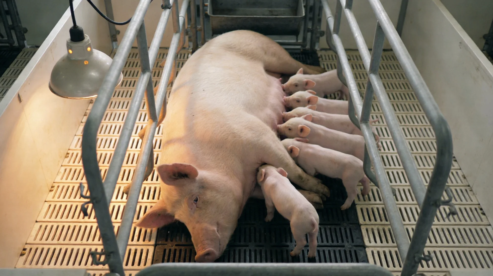

繁殖線 · 母豬專屬
母豬繁殖
硬組織利用支持肢蹄健康與繁殖耐力
軟組織利用提升蛋白供給，改善仔豬整齊度
01
先記錄基線
同場、同批次條件下記下使用前指標
02
按週期複測
記錄投入、產出、死亡與飼料成本
03
再核算淨收益
以本場數據比較使用前後差異
繁殖線
母豬繁殖痛點與改善對策
當前繁殖舍常見問題，與活力得®的精準改善方向
▌ 現況痛點
✕弱仔比例高——出生體重偏低，同窩整齊度差，育成損失高
✕肢蹄脆弱——蹄病與跛行拉高淘汰率，繁殖壽命縮短
✕哺乳需求不足——泌乳量無法支撐仔豬快速生長需求
✕斷奶重達不到——後段育成效果差，整批成本上升
▌ 活力得® 改善方向
✓硬組織利用——生物可利用硅源支持膠原與骨礦化，強化肢蹄結構
✓軟組織利用——蛋白酶相關組分提升蛋白水解，小肽氨基酸供給
✓繁殖耐力提升——肢蹄健康延長母豬使用年限，年產仔批次提升
✓固液期全段補給——懷孕至哺乳一貫使用，減少斷奶應激損失

同場前後對照：先記錄本場數據
目前未公開可追溯的活力得®對照試驗原始資料。本頁不展示未核實的成效數字；請按相同場區、品種、階段與管理條件記錄基線和使用後結果。
使用前基線
本場填寫
記錄批次、頭數／尾數、日糧、成本與主要痛點
使用後結果
按週期複測
沿用相同指標與計量口徑，保留原始紀錄
每批淨收益
由本場數據計算
增收＋節省－產品與額外管理成本；不套用行業均值
使用方式
兩步放大稀釋，確保均勻混合，發揮最佳效果
①
第一次稀釋：預混
取少量全價飼料（約 5–10 倍量），與活力得®充分混勻，製成預混料。
②
第二次稀釋：全量混合
依正式標籤／說明書核定的添加量與混料步驟，先均勻預混再投入全批飼料。
⚠
注意事項
避免直接倒入大批飼料；勿超量使用；存放陰涼乾燥處。
添加量、適用階段及混料方法請以銷售地區對應產品的正式標籤／說明書為準；未取得可公開的核准版本前，本頁不列統一劑量。請勿依本頁自行調整用量。
常見問題（FAQ）
母豬繁殖線建議添加量？
添加量、適用階段與混料方法以銷售地區對應產品的正式標籤／說明書為準；本頁暫不列統一劑量。
對繁殖表現有何幫助？
添加量、適用階段與混料方法以銷售地區對應產品的正式標籤／說明書為準；本頁暫不列統一劑量。
硬組織利用在母豬有何意義？
支持肢蹄健康與骨架礦化，維持繁殖耐力與使用年限。